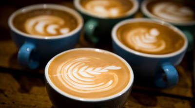

ESPRESSO

Espreso adalah minuman yang dihasilkan dengan mengekstraksi biji kopi yang sudah digiling dengan menyemburkan air panas di bawah tekanan tinggi. Espresso berarti "cepat" karena dibuat untuk disajikan segera
KOPIKU
LATTE
Latte atau Caffè latte adalah espresso atau kopi yang dicampur dengan susu dan memiliki lapisan busa yang tipis di bagian atasnya. Perbandingan antara susu dengan kopi pada caffè latte adalah 2:1
KOPIKU
CAPPUCINO
Kapucino adalah minuman khas Italia yang dibuat dari espresso dan susu, tetapi referensi lain juga ada yang menyebutkan bahwa kapucino berawal dari biji biji kopi tentara Turki yang tertinggal setelah peperangan
KOPIKU
AMERICANO

Caffè Americano atau Amerikano adalah minuman kopi yang dibuat dengan mencampurkan satu seloki espresso dengan air panas. Air panas yang digunakan dalam minuman ini adalah sebanyak 6 hingga 8 ons
KOPIKU
MACCHIATO
Caffè macchiato adalah minuman kopi yang dibuat dengan mencampurkan espresso dengan susu. Espresso macchiato dibuat dengan menambahkan sedikit susu ke dalam segelas espresso.
KOPIKU
MILK SHAKE

Susu kocok adalah minuman dingin dari campuran susu, es krim, dan sirop berperasa yang dikocok hingga berbusa. Selain dikocok dengan blender, susu kocok bisa dibuat dengan memakai gelas pengocok bertutup.
KOPIKU